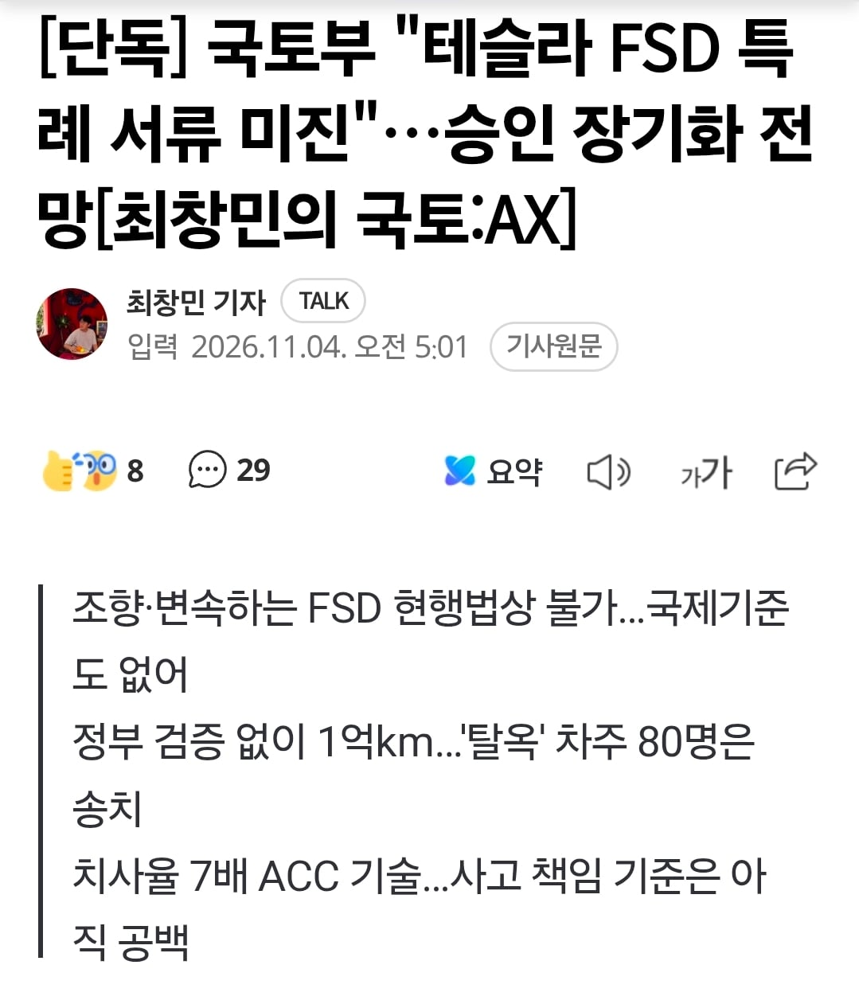
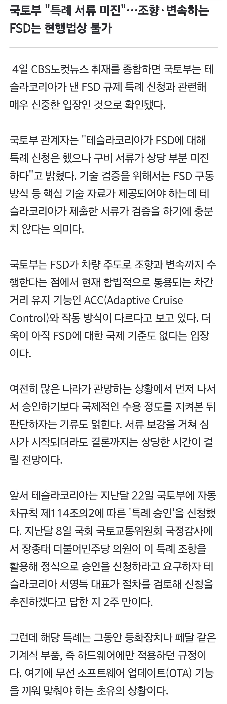
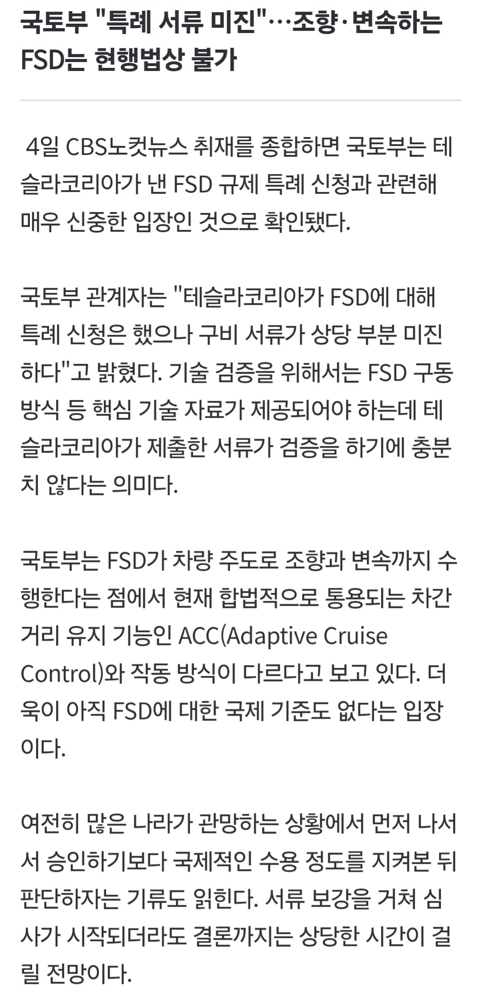

잘 돌아가고 있는지는 모르겠고
빤쓰까지 까서
문외한 틀딱들도 알아먹을 만큼 구구절절 설명을 해오란 말이다!



잘 돌아가고 있는지는 모르겠고
빤쓰까지 까서
문외한 틀딱들도 알아먹을 만큼 구구절절 설명을 해오란 말이다!
븅신년
이런 시발롬들 와이파이 못쓰게하고 핸드폰에 nate버튼 달아줘야 하는건데
케이스가 다른거 구분이 안되나?
당시에 제조사는 와이파이 붙이는게 가능했음.
소비자 권리를 막은건 통신 삼사임.
아이폰 막은거 삼성, 엘지가 아님.
와이파이 빼고 출시안한다니까 통신 3사가 막은거임.
그러니 이건 자국 산업 보호가 아니라 소비자 이권을 침해한거지.
그리고 테슬라 우리나라에서 안팔고 있음?
이미 팔고 있는 중임.
이미 활용되고 있던 기술을 다른 제품에 넣는거랑 없던 새로운 기술을 도입하는게 같냐?
다른걸 같다고 하는게 말이 안되는거 아니냐?
척화비도 세우자!!
어느정도 비등비등한거 막아서 경쟁에 유리하게해야 자국사업보호지 그냥 우린안되고 쟤넨 되니까 막자는건 쇄국이지 ㅋㅋ
핵심 기술 자료까지는 아니어도 어떤 방식으로 동작하고
취약점이나 이런 부분들이 잘 소명이될 수 있어야지
만약 그냥 승인해주면 fsd 문제생겨서 큰 사고 일어났을때
테슬라도 책임이 있겠지만 그걸 승인해준 국토부에도 책임이 있으니깐
걍 자국 산업 보호 때문이네 ㅉㅉ 이러기에는
천천히 돌다리 두드리면서 가는게 맞다고 봄
fsd가 아직 오작동 사례가 많이 없다고는 하지만
기계인 이상 노후화 되었을때 어떤 오류가 발생할 지 모르니깐
기술검증을 위해 핵심기술자료가 필요한데 그게 없어서 미비하다잖냐
그니까 크루즈 컨트롤이랑은 왜 그 기준이 다르냐고ㅋㅋㅋ
기준이 다르지 차간 거리 유지랑 차선 유지 하는 기술이랑
실제로 운전자 대신에 핸들 조향을 하는 기술인데
기준이 달라야지;;
지가 혼자 기어변경에 차로변경까지 다 하는 다른 기술인데 기준이 달라야지 뭔소리를 하는거냐
같을 시 문제
기준이 당연히 달라야 하는 기술임
사람들 인식 수준이 이러니까 좆되지 않으려면 더 깐깐하게 요구하는게 맞음
좀 해줘 ㅠㅠ 졸음운전 음주운전 사고 많이 줄지 않겠니 ㅠㅠ
이대로 가다간 현기차 다 죽는다말입니다!!!
모델X로 FSD 타기시작한지 딱 1년됐는데 이렇게 더디면 그냥 배터리 상태 맛가더라도 3천주고 배터리만 갈고 쭉 탈거같다.
그냥 서울 종로에서 네비에 부산역 찍고 가만히 앉아 있으면 부산역 앞에 주차해주는데 다른 차들은 언제쯤 지원해주려나..
겨울에 스키장비 싣고 서울에서 홍천까지 가는것도 지친몸으로 새벽에 돌아오는것도 너무 편하고 좋은데..
저거 막는다고 국내 업계가 개발 원활하게 잘 할 것 같지가 않음
태도가 글러먹음 데이터 귀한줄 모르는 것 같음
급나누기하면서 ai 안넣어주는건 진짜 애미뒤진 짓이긴함
현기가 만들었다고 테슬라 풀어 주는게 아니라 만들고 몇년뒤에 풀릴거라는게
무섭다
충분히 다 팔리고 난 후에나 통과시켜줄듯 ㅋㅋㅋ
선심쓰는 척
거기서 문제는 현기가 자율주행? 테슬라 fsd가 곧 풀린다는 심리로 판매량은 또 저조할걸
판매량은 상관없고 아마 '신토불이 자율주행! 안전하다!' 언플하고 사람들 한테도 충분히 검증되고 심리적으로 괜찮아져서 판매량이 반등해야 풀릴거라고 생각함
아마 다들 똑같이 생각할텐데, 그게 진짜 최소 5년이라는거지 ㅋㅋㅋㅋㅋㅋㅋㅋㅋ
끔찍하다
그건 아님 당장 내년이나 내후년엔 국제표준 도입 예정. 테슬라 예외승인이야 깔 명분이 있는데 아무리 현토부라도 국제표준은 배척못함. 당장 내년부터 벤츠나 샤오펑은 레벨2+시작할 예정이고 오히려 dcas 기준 x깐 테슬라만 안될예정
오 그럼 조만간 풀릴수 있는거야?
내년엔 풀릴걸로 예상


궁금한 게 테슬라 FSD는 소프트웨어가 핵심인데, 미국산은 되고 중국산은 안 되게 막는 걸 서류 미비로 컷하는 게 맞나 싶음.
미국이랑 FTA 맺어서 우리 나라 규제/법과는 무관하게 들어오는걸 어케막음.
미국산은 못 막음
그래서 국토부가 유감이라고 하더라 ㅋㅋㅋ
사실 미국산이 되는거 자체가 거의 을사조약급 특혜라고 보면 됨. 원래는 '몇대 정도만 안전검사를 통과시켜줘 ' 였는데 트럼프가 무제한으로 풀어버림.
국토부, 식약청<<실력도 없으면서 규정 관행 존나게 따지면서 지들 유리한곳엔 하나도 안따짐
....공무원이 규정안 따지면 어쩌라고..
1도 검토 해 볼 생각조차 없네 ㅋㅋㅋㅋㅋㅋㅋㅋㅋ
국토부 : 아직이냐 현대차 ! 크아악
승인 받을때 필요한 서류 중에 보안 문서 있어서 제출 못 했고 그걸로 서류미비 탈락이란 거네
테슬라가 하고싶은 맘 있으면 추가 제출 하겠지
네덜란드 예외승인 제출할땐 수천페이지로 냈는데 여기엔 서류 딸깍인걸로 봐선 별 의지 없음. 둘다 국감에서 까이니까 테슬라는 내는 척한거고 국토부는 심사한척 한거지
ACC랑은 전혀 다른 방식의 접근이 필요한 기술인데 사람들은 자꾸 엮어서 생각하는거 보면 기술자료 제대로 깐깐히 요구하는게 맞음
그리고 어떤 방식이든 사고났을때 제대로 책임지게 하려면 필요함
암튼 핸들돌렸다도르로 충분할거면 현기도 지금 당장 팔수있음
? : 여러분 조국을 위해서 현기차를 애용하셔야 합니닷!
당연한거임.
자국 산업 보호가 이상한가?